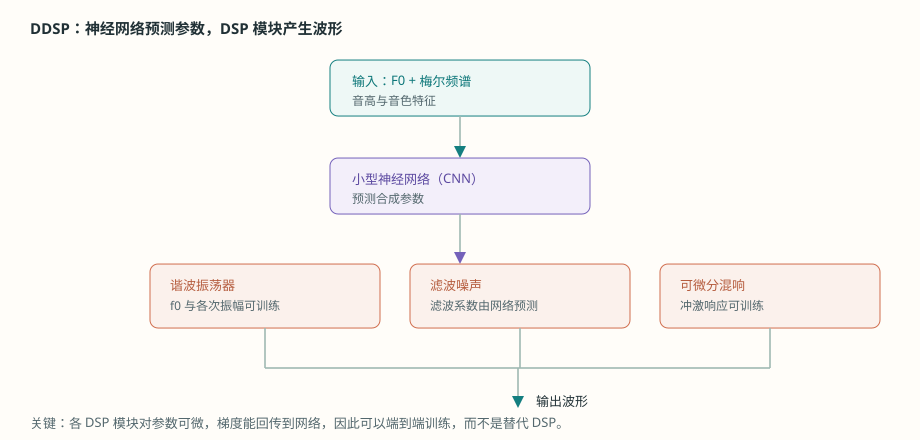
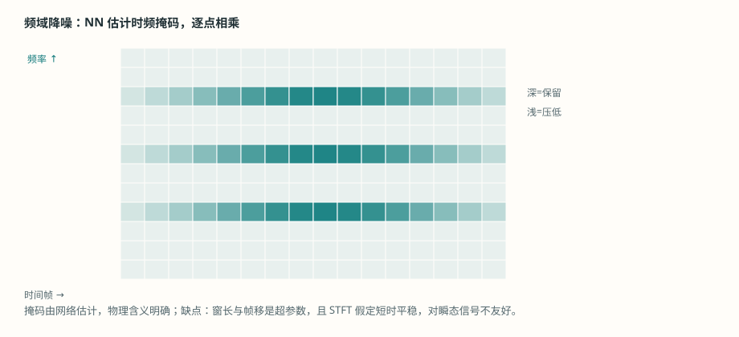
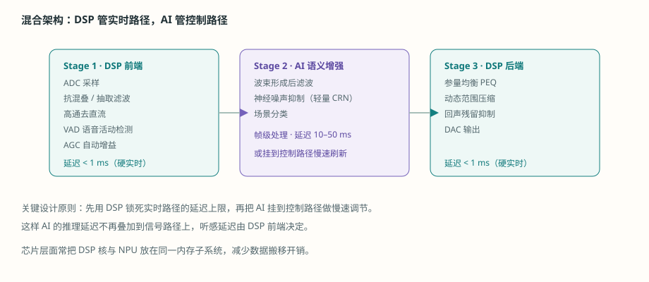

Applications · AI + DSP / 26
AI + DSP 融合：可微分 DSP 与神经声码器
经典 DSP 与深度学习的能力几乎正交：前者低延迟、可预测、可解释，后者擅长语义与非线性模式。融合的思路不是互相取代，而是各管一段。
两种能力的正交性
有了强大的深度学习，为什么还需要 DSP？反过来，经典 DSP 用了几十年，为什么还要加神经网络？答案在于两者能力的正交性：DSP 的强项（低延迟、低功耗、可预测、可解释）恰好是深度学习的弱项；而深度学习的强项（语义理解、复杂非线性模式）正是 DSP 做不到的。
因此融合的核心理念不是“用神经网络替掉 DSP”，而是让 DSP 管理确定性的信号处理（滤波、变换、增益控制），让神经网络处理非确定性的语义任务（场景分类、噪声类型识别、参数预测）。本章围绕这一原则，依次看可微分 DSP、神经降噪与神经声码器三个方向，并给出混合架构的工程约束。
经典 DSP 与深度学习的取舍
| 维度 | 传统 DSP | 深度学习 |
|---|---|---|
| 数学基础 | 有明确推导（滤波器系数、FFT） | 从数据中学习映射 |
| 可解释性 | 时频域意义明确 | 中间特征难直接解释 |
| 稳定性 | 在已知范围内严格稳定（LTI） | 分布外输入可能不可预测 |
| 延迟 | 极低（FIR 延迟为阶数个采样） | 需帧级缓存，通常更高 |
| 自适应能力 | LMS 等可自适应，但收敛较慢 | 训练后泛化强，动态场景需重训 |
| 功耗 | 专用硬件 MAC 效率极高 | 同功能通常更高 |
| 语义理解 | 无，只处理数值 | 强，能区分信号种类 |
表中不给出具体功耗倍数或延迟数字：它们强依赖于硬件、模型规模与量化策略，应以实际测量为准。可用的判断是：凡属“确定性、低延迟、要可解释”的环节，交给 DSP；凡属“语义、模式、参数预测”的环节，交给神经网络。
可微分数字信号处理
传统 DSP 模块的系数由设计者手动计算，一旦确定就固定不变。可微分数字信号处理（DDSP）把振荡器频率、滤波器系数、混响衰减时间都变成可训练参数，让神经网络根据输入特征实时预测它们，并用梯度下降端到端训练。

以谐波振荡器为例，输出是基频 f₀ 各次谐波的叠加：
式（1）：A_k 为第 k 次谐波振幅，由网络预测。f_s/f₀ 为整数时波形严格周期，例程在 f_s=16 kHz, f₀=250 Hz（周期 64 样本）下验证了这一点。
优势在于参数效率：网络不必直接生成波形样本，只需预测少量 DSP 参数。代价是它依赖先验（如可靠的基频估计），对强非谐波声音（如打击乐）建模较弱。
神经降噪：时域与频域
语音降噪是 AI+DSP 融合最实际的方向之一。经典谱减法在频域估计噪声谱并减去；深度学习的介入方式是让网络直接学习时频掩码。

理想比例掩码（IRM）定义在幅度域上：
式（2）：掩码在 0–1 之间。例程验证了理想掩码作用在混合幅度上能精确恢复干净幅度（误差 < 1e-12）。
频域方法的优势是利用了 STFT 的物理先验，训练较易收敛；但窗长与帧移是超参数，选不好会产生“音乐噪声”，且短时平稳假设对瞬态信号不友好。时域方法（如 Conv-TasNet）用一维卷积层替代 STFT 做可学习的时频分解，理论上更灵活、无需固定窗长，但计算量更大、更难调试。实时嵌入式场景通常优先频域方案（STFT 效率高、模型可更小）。
神经声码器
声码器从压缩的语音参数（如梅尔频谱）重建时域波形。传统声码器听感机械；WaveNet 首次用神经网络将声码器质量推到新的水平。
WaveNet 的核心是自回归生成，把波形样本的联合分布分解为条件概率之积：
式（3）：每步只预测下一个样本。扩张因果卷积使感受野随层数指数增长，但采样必须逐个循环，生成慢。
自回归生成虽然质量高，却无法实时。后续路线分为两支：并行化自回归（Parallel WaveNet、WaveGlow，用概率密度蒸馏或流模型把序列生成变为并行）与生成对抗声码器（MelGAN、HiFi-GAN）。HiFi-GAN 的生成器用转置卷积从帧率逐步上采样到采样率，配合多周期判别器在不同周期尺度上分辨真假。生成一步完成，因此适合实时部署。
混合处理架构
真实产品中很少见到“纯 DSP”或“纯 AI”方案。一种常见做法是把 AI 当作 DSP 链路上的“智能增强层”，并用路径分离来控制延迟。

这种分层的核心是延迟定预算：先用确定性 DSP 锁死实时路径的上限（例如把关键通路的延迟控制在个位数毫秒），再把 AI 放到控制路径做慢速调节。这样听感延迟由 DSP 前端决定，而不是被模型推理拖高。
交互：谱减法的过减因子
下面用一个确定性的“双音 + 噪声”单帧幅度谱演示经典谱减法：估计噪声谱后做 max(0, |Y| − α|N|)。拖动滑块改变过减因子 α，观察噪声点被压低与信号点被削掉的权衡。
动手验证：过减因子 α 的影响
交互仅辅助观察；式（2）与确定性程序在 JS 关闭时仍可独立理解。
完整可执行例程（26_ai_dsp.py）：断言理想比例掩码可精确恢复干净幅度（误差 < 1e-12）、掩码在 0–1 之间、谱减法 α=1 时纯噪声点归零、残余偏差随 α 单调增大，以及谐波振荡器在整数周期下的严格周期性。
边界与延迟预算
- 延迟预算优先：神经降噪依赖帧级上下文与模型推理，容易把端到端延迟拉高；应把 AI 放到控制路径，避免叠加到实时信号路径。
- 量化敏感性：转置卷积、归一化等层对低比特量化敏感，需用量化感知训练（QAT）对齐精度。
- 内存带宽：特征图常超出片上缓存，需对计算图切分并复用乒乓缓冲。
- 分布外输入：神经网络对未见过的噪声类型或电平可能产生不可预测的行为，需要 DSP 侧的限幅与回退。
- 可解释性：端到端模型的失败模式难以定位；把 DSP 保留在链路中，可在模型失效时提供可靠的降级路径。
自检：为何要把 AI 放到控制路径而不是信号路径？理想比例掩码为何能精确恢复幅度？WaveNet 为何难以实时而 HiFi-GAN 可以？
参考资料
- J. Engel et al. (2020) · DDSP: Differentiable Digital Signal Processing：把谐波振荡器、滤波噪声等 DSP 模块嵌入神经网络并端到端训练。
- A. van den Oord et al. (2016) · WaveNet：自回归波形生成与扩张因果卷积。
- J. Kong et al. (2020) · HiFi-GAN：基于生成对抗网络的高效、高质量神经声码器。
- Y. Luo & N. Mesgarani (2018) · Conv-TasNet：完全时域的语音分离与降噪网络。